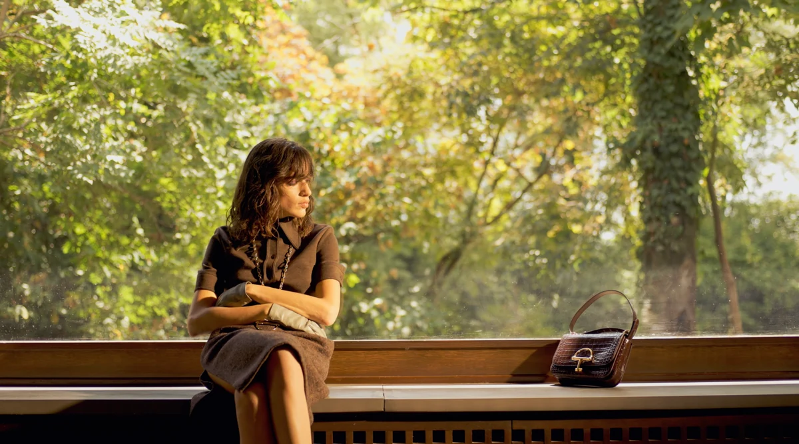
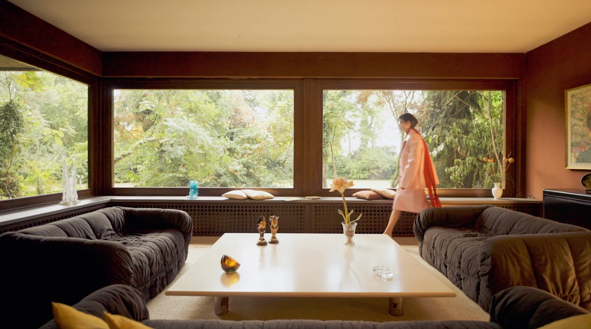

Fashion film · MOJEH × Gucci
The muse is the House itself
A fashion film directed for the Gucci special editorial in MOJEH, shot alongside the cover story on the Autumn/Winter collection.



Sprezzatura is a hard thing to photograph and a harder thing to film. It is the Italian art of looking effortless while nothing about it is: the studied carelessness of a coat left open, a hand half in a pocket. A still frame can suggest it. A fashion film has to keep it alive across a minute, in movement, without letting it tip into performance.
That was the brief for the Gucci special editorial in MOJEH, where I worked as video director alongside the photography team on set.
The collection
As MOJEH put it, Gucci “traverses time with the autumn/winter collection, staging a sartorial throwback that honours decades of savoir-faire” — beginning with the silhouettes of the 1960s, when the Maison showed its first ready-to-wear collection, and running through to the present. The pieces carry the House codes forward: a chenille jumpsuit under all-over GG crystals, the Horsebit returning on a belt buckle and again on a Softbit bag, stirrup detailing worked into metal chokers. Retro hues throughout — purple sablé, green bouclé tweed, patent mules in light grey.
Directing the film
Working as a fashion film director on an editorial set is a question of rhythm rather than of setups. The stills team is chasing the single decisive frame; the film has to find the movement between those frames — the walk in, the turn, the fabric catching up with the body a beat late. On this shoot the two ran in parallel, on the same light, in the same hours.
On set


Credits
- Video director
- Gabriele Compagni
- Publication
- MOJEH
- Fashion house
- Gucci
Photography Federica Putelli · Styling Enrica Lamonaca · Model Esin Bicak at Oui Management · Make-up Sara Del Re · Hair Erisson Musella at Blend Management · Casting Manon Sassy
Gabriele Compagni is an Italian fashion photographer and video director working between Milan and New York, directing fashion films, editorial video and branded content for international magazines and brands. See more work.